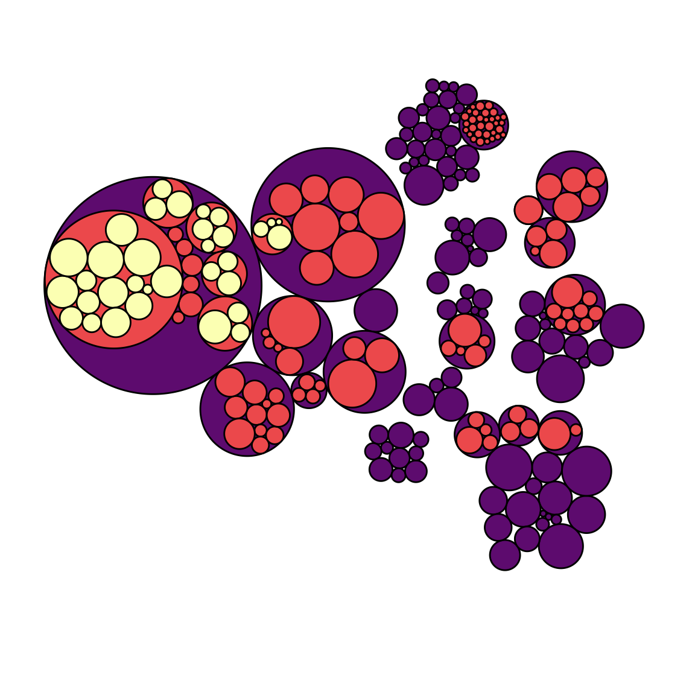

Dendrogram
definition - mistake - related - code
A dendrogram is a network structure. It is constituted of a root node that gives birth to several nodes connected by edges or branches. The last nodes of the hierarchy are called leaves. In the following example, the CEO is the root node. He manages 2 managers that manage 8 employees (the leaves).
# libraries
library(ggraph)
library(igraph)
library(tidyverse)
# create a data frame
data=data.frame(
level1="CEO",
level2=c( rep("boss1",4), rep("boss2",4)),
level3=paste0("mister_", letters[1:8])
)
# transform it to a edge list!
edges_level1_2 = data %>% select(level1, level2) %>% unique %>% rename(from=level1, to=level2)
edges_level2_3 = data %>% select(level2, level3) %>% unique %>% rename(from=level2, to=level3)
edge_list=rbind(edges_level1_2, edges_level2_3)
# Now we can plot that
mygraph <- graph_from_data_frame( edge_list )
ggraph(mygraph, layout = 'dendrogram', circular = FALSE) +
geom_edge_diagonal() +
geom_node_point(color="#69b3a2", size=3) +
geom_node_text(
aes( label=c("CEO", "Manager", "Manager", LETTERS[8:1]) ),
hjust=c(1,0.5, 0.5, rep(0,8)),
nudge_y = c(-.02, 0, 0, rep(.02,8)),
nudge_x = c(0, .3, .3, rep(0,8))
) +
theme_void() +
coord_flip() +
scale_y_reverse() 
Dendrogram can be made with 2 types of dataset. i/ A numeric matrix allowing to compute distance between individuals ii/ A hierarchical dataset where the relationship between entities is provided directly.
Circle packing is not recommended if you need to precisely compare values of group. Indeed, it is hard for the human eye to translate an area into an accurate number. If you need accuracy, use a barplot or a lollipop plot instead.
However, circular packing shows very well how groups are organised in subgroups. It uses the space a bit less efficiently than a treemap, but the hierarchy gets very neat.
When using circular packing I really like to remove the first or two first levels of the hierarchy on the plot. I believe it improves the appearance of the graphic but this is purely an aesthetic point of view:
# Libraries
library(ggraph)
library(igraph)
library(viridis)
# We need a data frame giving a hierarchical structure. Let's consider the flare dataset:
edges=flare$edges
vertices = flare$vertices
mygraph <- graph_from_data_frame( edges, vertices=vertices )
# Second one: add 2 first levels
ggraph(mygraph, layout = 'circlepack', weight="size") +
geom_node_circle(aes(fill = as.factor(depth), color = as.factor(depth) )) +
scale_fill_manual(values=c("0" = "white", "1" = "white", "2" = magma(4)[2], "3" = magma(4)[3], "4"=magma(4)[4])) +
scale_color_manual( values=c("0" = "white", "1" = "white", "2" = "black", "3" = "black", "4"="black") ) +
theme_void() +
theme(legend.position="FALSE")
Note that if only one level of hierarchy is displayed (no encapsulation), it becomes equivalent to a barplot. Instead of showing the value of each individual as a bar, it uses a circle.
The R and Python graph galleries are 2 websites providing hundreds of chart example, always providing the reproducible code. Click the button below to see how to build the chart you need with your favorite programing language.
Any thoughts on this? Found any mistake? Disagree? Please drop me a word on twitter or in the comment section below:
A work by Yan Holtz for data-to-viz.com